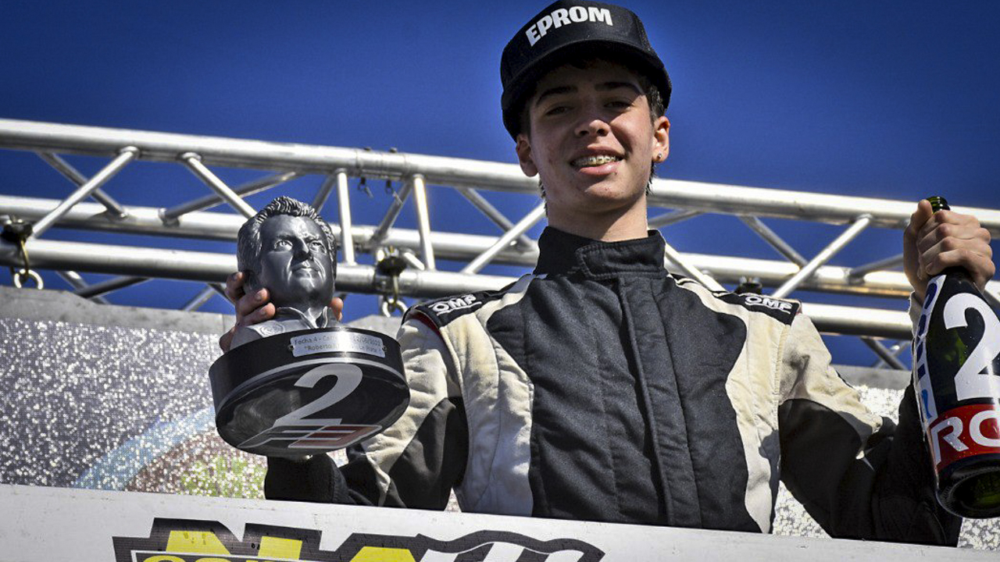

Con un total de 40 pilotos inscriptos la categoría de monopostos dará inicio a la actividad de la quinta fecha del calendario 2022 a partir de este viernes en el trazado platense. El arranque lo encabezaran las dos tandas de entrenamientos, para luego dar cierre de la actividad, de la primera jornada, con la primera clasificación válida para la carrera final a disputarse el día sábado por la tarde. En el campeonato el pampeano, Gino Bernardelli llega ubicado 8° con 96 puntos, mientras que Enzo “Toto” Torres acecha en el 10° lugar de la tabla que lidera Juan Pablo Guiffrey, los 85 Pts del piloto de Hurlingham lo dejan a una diferencia de 99 del líder, la que intentará achicar en esta fecha. Cuando el torneo llega casi a la mitad del calendario los objetivos respecto de los resultados logrados hasta aquí generan nuevas estrategias en pos de cerrar la temporada de manera positiva.

“Si bien estoy conforme con algunos de los resultados que hemos tenido se que tenemos mucho por trabajar junto al equipo, hemos tenido constancia de resultados, no hemos tenido resultados muy buenos, logramos ir al podio varias veces en lo que va del año, por eso por ahí nos podemos ubicar arriba y después por errores míos o del equipo de estrategia y demás, hemos penado un par de finales, casi que la misma cantidad de finales que hicimos podio y no sumamos puntos así que hay que tratar de revertir esa situación” remarcaba Gino. A lo que además agregó; “Obviamente que como todo piloto la esperanza de cada fin de semana es ir a ganar así que vamos a ver qué nos depara el destino y cómo nos encontramos en pista en la primera en las primeras tandas” concluyó Bernardelli.
“Las expectativas para este fin de semana son muy buenas después de una muy buena fecha que tuvimos en La Plata donde nos cayó muy bien el circuito con chicana. El auto funcionó correctamente durante todo el fin de semana pudimos tener buenos resultados encontrar un poco el nivel del auto, darnos cuenta de que estamos para pelear grandes cosas y la verdad que estoy muy tranquilo disfrutando junto a todo el equipo, la verdad es que me motiva muchísimo la manera de trabajar de todos los chicos del EPROM Racing Team” destacó el joven piloto. “Para esta fecha estuve preparándome durante esta semana, entrenando físicamente, cognitivamente, la verdad que busco estar al 100% para rendir bien” remarcó Enzo. “Sabemos que para pelear entre los primeros cinco requiere de muchísimo tiempo, experiencia y trabajo, así que nos estamos preparando para eso. Estoy muy agradecido con todo el equipo, con toda la gente que nos está apoyando, este fin de semana podemos llegar a pelear grandes cosas.” concluyó Torres.